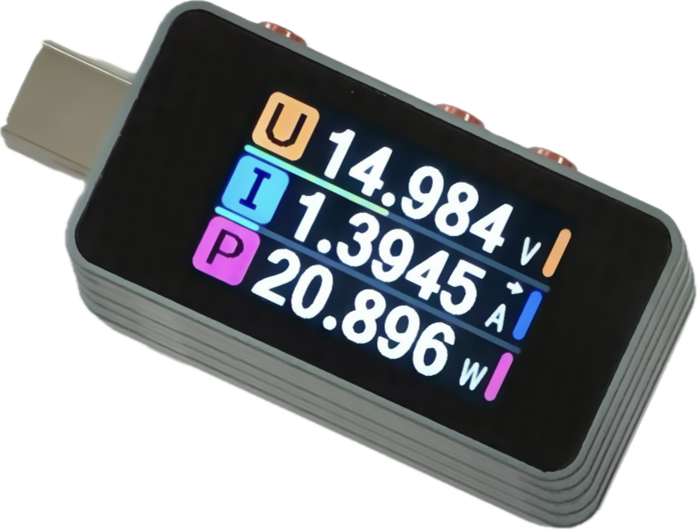

早速、製品レビューでもしていこうかな、ということで初回はRYKEN RK011をレビューしていきます。
Amazonで1999円、まぁしょぼいやつと値段は同じように見えますが…

画像はゴリゴリ合成(by me)なのでおかしいです(笑)
｢この価格帯でリップル表示対応してるの珍しいな〜｣とか思ってたらポチっていました。
届いたら驚きですね。金属ケースに入った、少なくとも7000円はしそうな製品と同じような梱包でしたから。
使ってみると結構良いんですよね。
僕はAVHzY CT-3(YK-Lab Shizuku)も持っているのですが、それより遥かに画面の解像度が高くて驚きました。
CT-3って、USB Type-Cコネクタがどちらもメスなので、地味に常用は難しいんですけど、こちらはオス&メスなので非常に良い。
これから常用確定です。
スペックに関しては割と標準的な印象ですが、必要十分ともいえます。
5桁の桁数も常用する分にはちょうど良いです。
ただし、リップル機能(オシロスコープ機能)のリフレッシュレートは低いので、大まかにしか見れない点は注意です。
それでもやはり、PDなどのトリガーをかけられないのが残念でした。
今、取説を英訳中なので完成したらまた追記します。